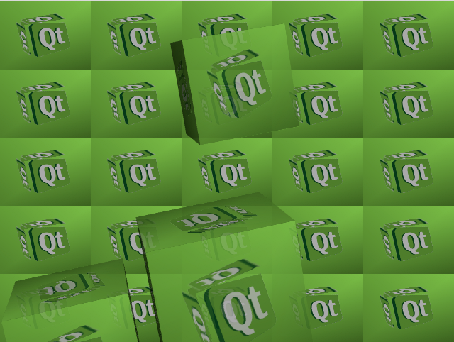
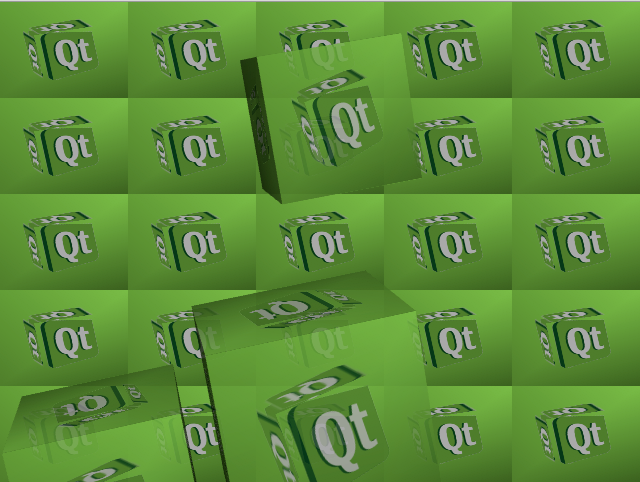

Pixel Buffers Example
The Pixel Buffers example demonstrates how to use the QGLPixelBuffer(obsolete) class to render into an off-screen buffer and use the contents as a dynamic texture in a QGLWidget.

Files:
The Pixel Buffers example demonstrates how to use the QGLPixelBuffer(obsolete) class to render into an off-screen buffer and use the contents as a dynamic texture in a QGLWidget.

Files: